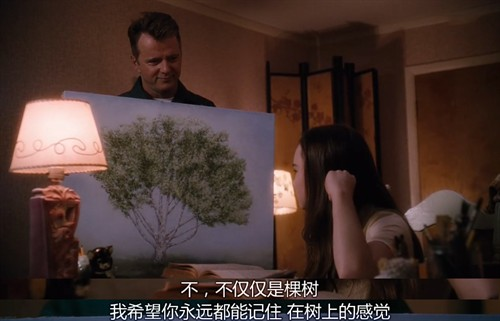
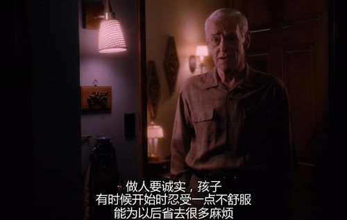
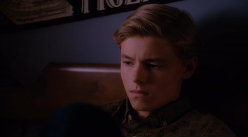

昨天看了《怦然心动》，满满的温馨。在写这篇文章时，又回顾了两遍。 这部电影和别的电影叙事手法不一样，它是通过男女主角的内心独白相互切换来向观众展示情节的。这样的手法不会让观影者感到枯燥无趣，可以及时的了解到主角双方的想法。虽然是一部文艺爱情片，但影片中没有一系列狗血的事件——没有大雨中的撕心裂肺、没有堕胎、没有死别......
怦然心动
在《怦然心动》里满满的是孩童期间的纯真和成长，他给我的感觉特别真实，仿佛触手可及，仿佛那就是你我的童年
在影片中，有很多让我怦然心动的时刻。我影响最深的是梧桐树的这个情节。社区里有颗高大的梧桐树，女孩从小就喜欢坐在高高的树上看远处的风景，但有一天，因为这里要新建一座房子，需要砍掉梧桐树，小女孩坐在树上牢牢的抓住树干，努力又无助地哀求着不要砍掉这颗树，我觉的这棵树就是她的信仰、是她的精神依靠。她最终还是没能守住自己的心爱的梧桐树被爸爸劝了下来，因为爸爸说“什么样的景色都没我女儿的安全重要”。
梧桐树被砍掉后，小女孩为此哭了整整两个星期，她一直闷闷不乐，她不开心有两个原因，其一是她没有守护住她心爱的梧桐树了，其二是当她在与施工方抗争不砍树时，求助于小男主，但小男主并不想因此旷课就没有搭理她。 有天小女孩仍然沉浸在失去树的伤感中时，爸爸问她感觉怎么样，她强装无所谓的说道“不过是棵树”，当爸爸拿下画布的那刻，我很“矫情”的落了泪，爸爸为她画了那颗梧桐树，我觉得小女孩的精神依靠又回来了，爸爸说“我希望你永远都能记住，在树上的感觉”。
我也喜欢在高高的地方看远处的风景，可能是这份感同身受打动了我；可能是小女孩用力守护自己心爱之物的感情打动了我；或许又可能是她明明很在乎树被砍了却要强装无所谓的样子，这点和我很像，所以打动了我，总之我看了很动容。
影片中还讲到了小女孩送爱心鸡蛋给男孩却被偷偷扔掉。 起因是男孩家里收到鸡蛋后，质疑鸡蛋的来源，便让男孩去问问女孩，但男孩从小就避女孩远远的，为了避免跟女孩正面接触，他和他的朋友偷偷去探查了女孩家的鸡舍，感觉“脏乱差”，并向家里人说了，家人怕得“沙门氏菌”便表示，让男孩把鸡蛋退还给女孩，借口说“不爱吃鸡蛋”，但男孩由于不愿与女孩沟通，又不想因退回鸡蛋而伤了她的心，就开始瞒着家里偷偷把鸡蛋扔掉。但女孩并不知情，仍然常常准时来送鸡蛋。
直到有天被女孩撞见扔鸡蛋。女孩非常生气，此后看见男孩就回避他，男孩因心怀愧疚，对女孩越来越关注，也开始试着去了解她。此时的女孩因男孩说她家院子脏乱差，便开始修整自家前院，男孩的外公也常常来帮助她。同时外公还劝导男孩“...做人要诚实，有时候开始时忍受一点不舒服，能为以后省去很多麻烦”。于是男孩便去向女孩道歉。
 在拒绝托尼 · 斯塔克之前，彼得返回到学校，和忧心如焚的丽兹谈及她的父亲；而她告知彼得她和她的母亲要搬到俄勒冈州。这意味着学术十项全能团队需要一个新队长——在全国大赛上起到决定作用的米歇尔担任了这个职责。
米歇尔的身份验证了此前大部分漫迷的推测：米歇尔被任命为队长时说，"我的朋友都叫我MJ"，几乎完全是在模仿《黑暗骑士崛起 》结尾罗宾/布莱克自报家门的桥段。她是新版的玛丽· 简 · 沃特森，不过在漫画里她显然不存在于这个宇宙中。
当彼得不得不离开庆祝会议时，她大胆质问彼得，间接表示关怀，她的眼神无疑暗示了下一集里我们会看到了她与彼得的更多浪漫互动。
唐纳德·格洛弗饰演的亚伦·戴维斯有犯罪前科，也被称为徘徊者，而他声称自己还有个外甥，这似乎表明，漫威可能会将迈尔斯·莫拉莱斯作为一个独立的角色推出来。
即使他们允许索尼独自通过一部 MCU的附属电影推出黑人蜘蛛侠，看到年轻的莫拉莱斯和格洛弗饰演的徘徊者以父亲与儿子（准确说是舅舅与外甥)的形式出现，依然令人喜闻乐见。
显然格洛弗是一个很有才华的演员，不可能就这么在漫威电影里只简短出现一次-正如迈克尔·曼多的角色显然是为了引出更大的事件。问题是我们会在银幕上看到迈尔斯·莫拉莱斯吗？
影片的最后一幕也是整部电影的最佳片段之一。彼得又一次打击犯罪后返回家里，穿着蜘蛛侠制服回到卧室，没有仔细检查是否有人在家（没有吸取上一次被内德撞见的教训）。
结果梅婶出现在他身后，大喊了声"WTF-"——片尾字幕开始。这个搞笑场景明示了，梅婶已经知道了彼得的秘密。
至于她是否会像漫画书里那样性情大变，把他撵出去仍有待观察，不过她比漫画版更年轻的事实也表明了，彼得不需要因为救助他人和照顾梅婶难以两全而感到内疚。至少我们不需要看他一直担心被最亲密的家人发现自己一直在说谎。
最初预告片中不必要地揭示了在蜘蛛侠和秃鹰的最后大战中，彼得露了真容，根据惯例来说，为了有效保护彼得的身份，秃鹰似乎已经必死无疑了。
而令人震惊的是，他并没有死于意外或死于蜘蛛侠之手，这显然符合彼得不杀生的一贯宗旨，而且也为续集留下相当大的空间。
当然，秃鹰随后似乎也证明了，他不会说出蜘蛛侠的身份，大概是因为彼得救了丽兹和他自己的性命，而我们也得知犯罪圈里已经有传言称他知道蜘蛛侠的真实身份。那么这意味着他一定会回归续集 （那怕只是客串），或者最终通过台词宣告他的死去吗？总之漫威不可能随随便便让一个知道秘密的恶棍销声匿迹。
虽然秃鹰团队的大部分人最终都玩完了，要么被击毙要么被捕，但在影片结束时，迈克尔·哲努斯饰演的关键人物修补匠仍然在逃。
即使没有秃鹰"带领"他，他依然是一个很有实力的恶棍，完全可能会很张扬地回归续集，或许是继续作为帮手效力其他的大反派，和漫威电影宇宙中复仇者联盟的一系列战场遗留物产生瓜葛。他甚至可能会出现在衍生电视剧《损害控制》中。
随着毒蝎回归续集的暗示，你完全可以推测出，修补匠会为了钱继续与其他坏人合作，利用电影前面提到的外星人科技为毒蝎打造蝎子尾巴，帮助他对付蜘蛛侠。
在史泰登岛渡轮大战中，毒蝎被一辆车撞进了纽约湾，但是他大难不死，在片尾第一个彩蛋中再次出现，显然他手臂受伤很严重，面部疤痕也很可怕，而且他想要复仇。
他并不责怪秃鹰，他清楚地知道蜘蛛侠是他不幸的根源，发誓要报复他。这似乎意味着我们已经知道谁会是续集里的恶棍了，只要他们给迈克尔·曼多更多的银幕时间，他一定会给观众留下深刻的印象。
另外，他所说的那些想要干掉蜘蛛侠的"外面的朋友"，是指还未浮出水面的险恶六人组吗？考虑到索尼筹备这个反派联盟已久，这无疑是一个有趣的铺垫。